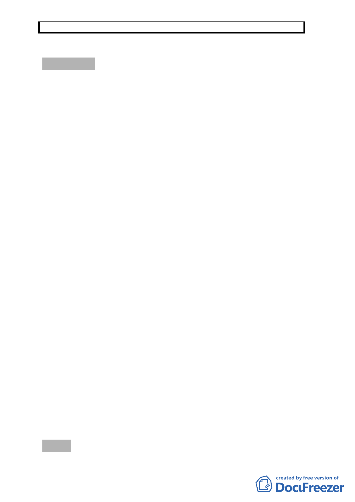

委員會決議 同編號 1
討論事項 三
案名：劃定臺北市萬華區莒光段二小段 655 地號等 20 筆土地為更
新單元
案情概要說明：
一、 本案係市府以 100.3.29 府都新字第 09932260800 號函送到
會。前經提 100.4.28 本會第 623 次大會審議決議：「考量本
更新單元鄰萬大路、艋舺大道與萬華火車站等重要幹道與設
施，且更新單元鄰地亦達更新年限，以及該地區整體開發對
萬華地區都市景觀與環境改善之助益、都更指標性等考量，
請都市更新處就案內東側鄰地納入更新單元之可行性與其
參與更新之權益，召開鄰地協調會，並將協調情形提報下次
大會說明。」。
二、 市府都市更新處 100.5.17 業依前開會議決議辦理鄰地協調
說明會完竣，100.7.11 重新檢送修正後計畫書圖續審。
三、 更新單元位於萬華區萬大路以東、興寧街以南、興寧街 28
號以西及艋舺大道 120 巷 38 弄以北街廓範圍內，面積為
1,229 平方公尺。（詳計畫書圖 1 更新單元範圍圖）
四、 更新單元土地使用分區為商三特（原屬住三），土地權屬公
有土地佔 7.65%、私有土地佔 92.35%，建物權屬皆屬私有，
目前同意參與更新比例之土地所有權人為 34.38%，建物所
有權人為 42.86%。
五、 規劃設計構想將本更新單元西側鄰 15 公尺萬大路留設騎樓
或退縮 3.64 公尺以上無遮簷人行道；鄰北側及南側 8 公尺
計畫道路均退縮留設 3.64 公尺以上無遮簷人行道，並與計
畫道路順平處理。
六、 申請人：黃秋隆、林玉丹
七、 辦理單位：臺北市政府。
八、 法令依據：都市計畫法第 66 條、都市更新條例第 5、6、8、
11 條暨臺北市都市更新自治條例第 15 條規定辦理。
九、 本更新單元劃定業經市府 99 年 6 月 14 日審查符合更新單元
劃定基準。
決議：本案都市更新處依本會第 623 次委員會議決議事項召開更
新單元東側之鄰地協調會，更新處表示協調會時該鄰地所
- 17 -